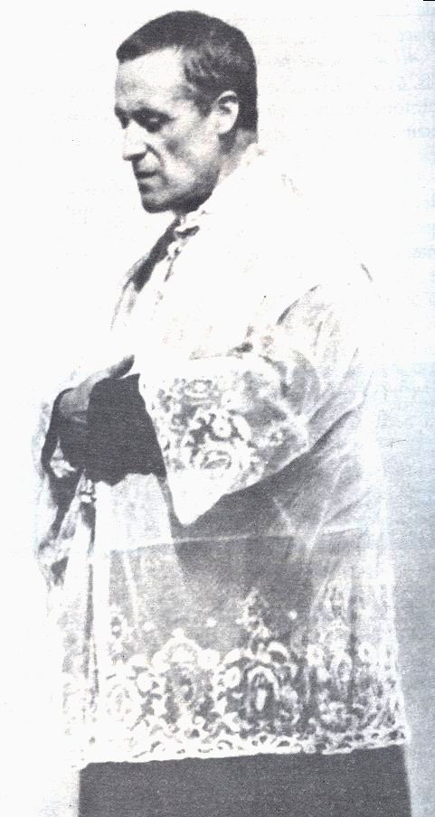

Misionari, pastiri i mistici (Pojedinačna proglašenja)
Svećenik · Duhovnik · Služitelj siromašnih
Sv. Josip Marija Rubio
1864. – 1929.
Španjolski svećenik poznat kao apostol Madrida povezivao je duhovno vodstvo s brigom za siromašne. Nakon godina župne i nastavničke službe pristupio je isusovcima te nastavio služiti ljudima madridskih četvrti.

Izvor slike
- Spomendan
- 2. svibnja
- Zaštitništvo
- Nije navedeno u izvoru
- Životni vijek
- 1864. – 1929.
- Djelovanje
- Obrazovanje i poučavanje vjere · Duhovno vodstvo i razlučivanje · Siromašni i isključeni
- Razdoblje
- 19., 20. stoljeće
- Slavi se
- 2. svibnja
Životopis
Sveti José María Rubio y Peralta, španjolski svećenik, isusovac, „apostol Madrida“, rođen je 22. srpnja 1864. u Dalíasu (provincija Almería, Andaluzija), kao najstarije od trinaestero djece u seljačkoj obitelji Francisca Rubija i Mercedes Peralta. Od djetinjstva je maštao o svećeničkom pozivu pa je 1876. ušao u sjemenište u Almeríji. Premjestio se 1879. u sjemenište u Granadu, gdje je studirao filozofiju, teologiju i kanonsko pravo. Za svećenika je zaređen 24. rujna 1887. u Madridu, a nakon toga djelovao u blizini Madrida, kao kapelan u Chinchónu (1887-1889) i župnik u Estremeri (1889-1890). Od 1890. do 1894. predavao je u madridskom sjemeništu metafiziku, latinski i teologiju te djelovao kao kapelan kod madridskih redovnica bernardinki u crkvi Sacramento de Madrid. Gotovo 20 godina vodio je brigu o starijem bratu, svećeniku. Posjetio je 1904. Svetu zemlju i Rim, a 1906. ušao u isusovački novicijat u Granadi. Svečane redovničke zavjete položio je 1908. Otac Rubio bio je primjeran u svojem pastoralnom djelovanju pa ga je madridski nadbiskup Leopoldo Eijo y Garay nazvao apostolom Madida. Bio je poznat po svojim jednostavnim, dirljivim propovijedima i obratio mnoge bezvjerce.
Omiljeni ispovjednik, naročitu brigu vodio je o siromasima i pružao im svu moguću materijalnu i duhovnu pomoć. Pod njegovim vodstvom otvorene su besplatne škole koje su nudile siromašnim učenicima raznolika znanja i zanate. Ustrajno je pomagao bolesnicima, tražio posao za nezaposlene i osnivao različite vjerske i dobrotvorne udruge. Bio je duša i srce dobrotvornih akcija, ali je uvijek ostajao u pozadini. Organizirao je misije i duhovne vježbe u najsiromašnijim dijelovima i predgrađima Madrida. Vjerovao je da siromasima treba pomoći potpuno, i duhovno i materijalno, a treba ih voljeti onakve kakvi jesu, te cijeniti njihovo dostojanstvo. O njemu kruže brojne legende i pripisuju mu se mnoga čuda, ozdravljenja i proročanstva. Bio je poznat po uzrečici: „Čini ono što Bog želi i želi ono što Bog čini“. Mistik, s darom vizija i bilokacija, otac José María Rubio y Peralta preminuo je na današnji dan, 2. svibnja 1929, u Aranjuezu, 42 kilometra južno od Madrida. Njegove relikvije čuvaju se i časte u madridskoj isusovačkoj crkvi Svetog Franje Borgije i Presvetog Srca Isusovog. Papa Ivan Pavao II. proglasio ga je blaženim 6. listopada 1985, a svetim 4. svibnja 2003. u Madridu.
Pročitaj više na izvornoj stranici ↗